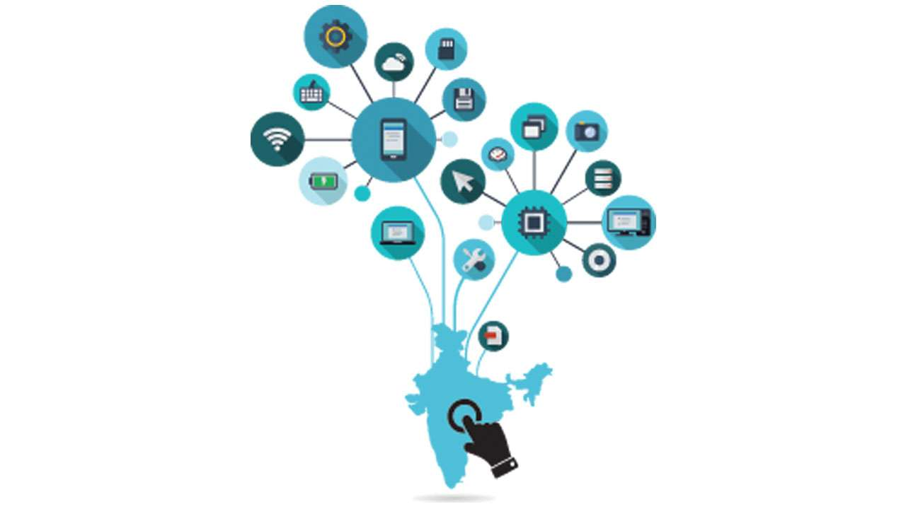

The Barriers towards the Goal of Digital India
To accomplish the goal of digitalization of India, the following stoppers must be removed:
- Poverty
Government should take suitble steps to minimize the need of the poor as without the fall of poverty, Digital India can not be accomplished.
- Illiteracy
The government has launched various programs which are dedicated to digital illiteracy.
- Electricity Problem
- Digital fraud & Cyber crime
- Radiation problem
- Outdated data
- Strategy and execution aren't connected
- Inability to experiment quickly
- Internal culture
- Lack of Dedicated IT Skills
- A Lack of Organizational Change Management

However, the following issues can be solved by using our smartness and mind effectively!
Back
Thank you!!